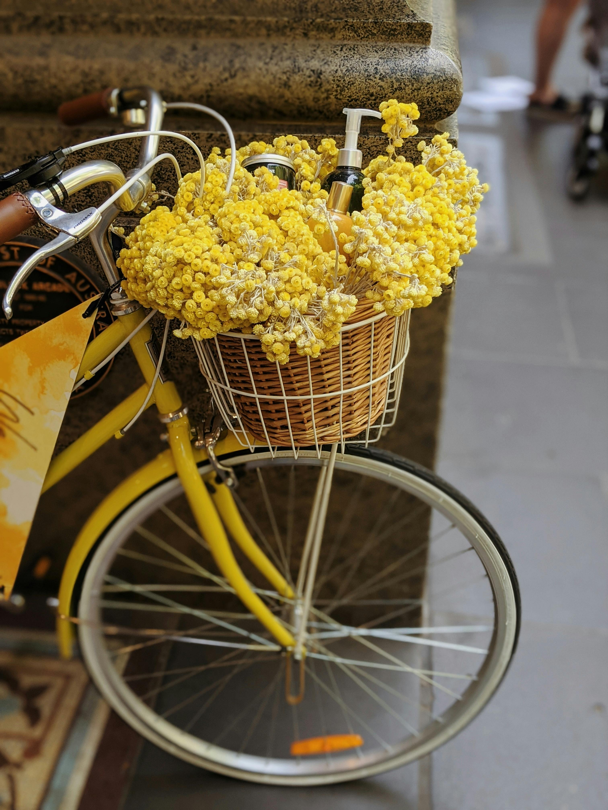

Xush kelibsiz mening gullar albomimning web-sahifasiga
Mirzo Ulug‘bek nomidagi O‘zbekiston milliy universitetining Jizzax filiali
Psixologiya fakulteti Filologiya va tillarni o‘qitish (ingliz tili) yo’nalishi 204-24-guruh
talabasi Olimxonova Sarvinozning Axborot texnologiyalari fanidan bajargan fan
topshirig’i.

Rose
Tulip
Sunflower

Lily

Daisy

Orchid

Lavender

Peony

Marigold

Cherry Blossom